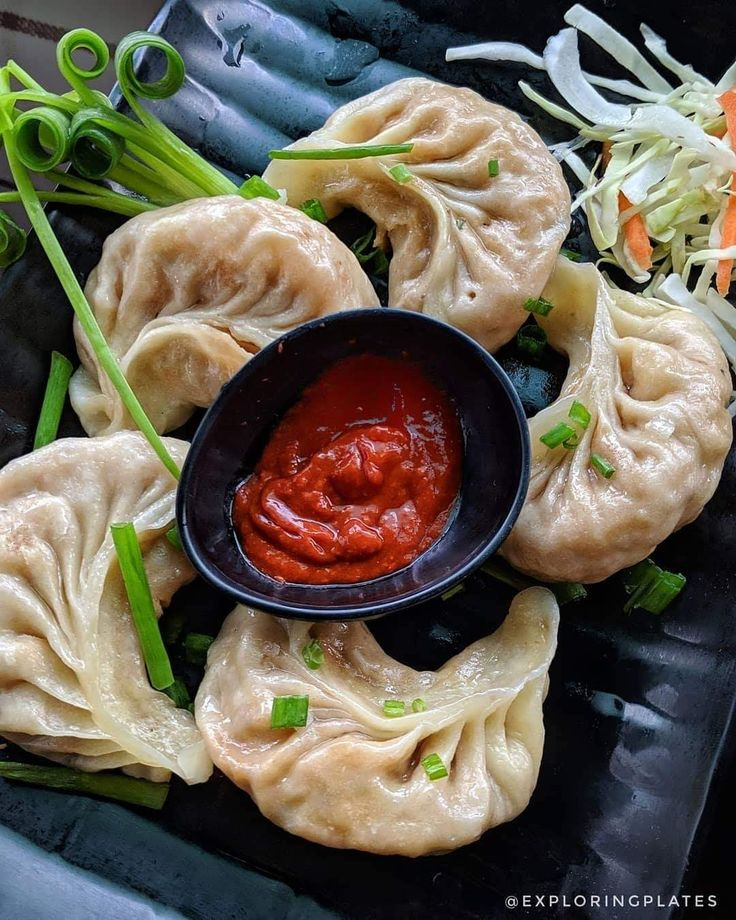

Home Page
Momo Recipe

Description
Momo is a Nepali dish which is similar to a dumpling in looks but the taste is very different.
The differentiating factor is the fillings and the dipping sauce. Let's dive deeper into the recipe of making momos.
Ingrediants
- For Dough
- Flour
- Salt
- Lukewarm Water
- For Fillings
- Chicken Mince
- Onions
- Celery
- Ginger
- Pepper
Steps:
- For Dough
- Mix the flour, salt and lukewarm water properly and knead the mixture.
- Once you finish mixing the mixture, cover the dough and let it rest for about 30 mins.
- Make small portions of about 5-7 grams and make small balls from each portion.
- Chicken Fillings
- Mix all of the ingrediants for the chicken fillings. And the fillings will cook when we steam the momo.
- We then roll out the portioned dough, add the fillings and fold the momos to close the opening.
- Add a little bit of oil throughout the steamer and place the momos in the steamer.
- Steam the momos for 6-10 minutes, and your delicious homemade momo is ready to eat.